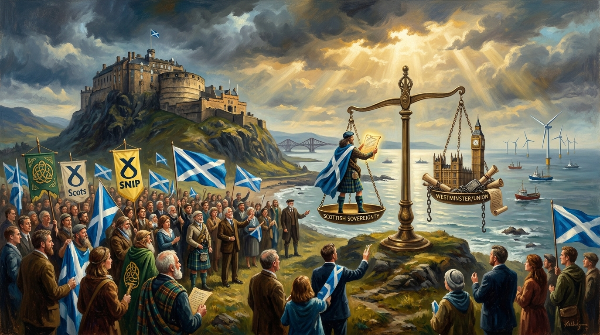

THE SNP. An Appraisal: For Real Change?
From fringe margins in 1934 to the 1967 Hamilton shockwave, the 2011 majority, the 2014 referendum, the managerial retreat, and the dawn of the 2026 Celtic Alliance.

“The Shield, The Excuse, and The Betrayal”
This essay was adapted into a slow, heavy blues crawl in B minor produced in collaboration between The Shady River Bard and Trevor Swistchew. Gritty spoken Scottish male baritone verses alternate with soaring soulful female blues choruses, creeping basslines, and weeping distorted guitar leads: “Competence became a shield. The shield became an excuse. The excuse became a betrayal.”

The Six Epochs of the Scottish National Movement
Analyzing ninety-two years of self-determination: from idealistic margins to majority governance, managerial inertia, and Celtic convergence.
1928–1934: Surviving the Margins of British Politics
The Scottish National Party emerged from the merger of the National Party of Scotland (1928) and the Scottish Party (1932) because early pioneers understood division was fatal.
Ignored, mocked, dismissed as eccentric. Zero institutional backing, no press support, lost deposits across the country. Yet the central idea that Scotland should govern itself refused to die.
As heavy industry decayed and the old Labour-Unionist consensus cracked, Scots began to recognise that Westminster was structurally incapable of serving Scottish interests.
The Scottish National Party was born from frustration, from fragmentation, from the failure of earlier movements to unite behind a single, coherent demand for national self‑determination. Its roots lie in the National Party of Scotland, founded in 1928, and the Scottish Party, founded in 1932. They were small, both were idealistic both trapped in the margins of British politics. They merged in 1934 to form the SNP because they understood that division was fatal.
The early decades were bleak. The party was ignored, mocked, dismissed as eccentric. It had no money, no institutional support no media backing, no electoral success. It had one thing that mattered: the idea that Scotland should govern itself. That idea survived every failure, every lost deposit, every internal argument, every ideological rift.. It survived because Scotland itself was changing. The decline of heavy industry, the collapse of the old Labour unionist consensus, the rise of a modern Scottish identity and the growing recognition that Westminster was not designed to serve Scotland’s interests created the conditions for the SNP’s slow rise.
The dawn came in 1967 with Winnie Ewing’s victory in Hamilton. It was not just a seat. It was a shockwave. It proved the SNP could win. It proved independence was not a fringe fantasy. It proved Scotland was willing to challenge the political order. The party was still unstable. It fought internally over ideology, over strategy, over whether independence should be gradual or immediate, over whether the party should lean left, right, or remain ideologically neutral. These fights were not cosmetic. They shaped the party’s future. The 1970s saw the SNP surge and collapse. The discovery of North Sea oil transformed the debate. The slogan “It’s Scotland’s Oil” was not propaganda. It was a factual statement about a resource that could have rebuilt the nation. Westminster’s refusal to acknowledge the scale of Scotland’s wealth hardened Scottish opinion. The SNP gained eleven seats in 1974. But internal disputes over how to handle the devolution question tore the party apart. Some wanted full independence immediately. Others believed devolution was a stepping stone. The party fractured. The vote collapsed. Labour regained dominance. The SNP entered a long winter.
The modern rise began in the late 1980s and early 1990s when Scotland rejected Thatcherism and rejected the democratic deficit that allowed governments Scotland did not vote for to rule Scotland anyway. The SNP positioned itself as the alternative to Labour’s caution. When devolution arrived in 1999 the SNP entered Holyrood as a major force but not the dominant one. The internal fights continued. The party struggled to define itself. It fought over centralisation versus grassroots democracy. It fought over how to pursue independence. It fought over leadership. But the arrival of Alex Salmond as leader stabilised the party. Salmond understood that independence required credibility. He professionalised the party. He sharpened its message. He built a coalition that stretched from social democrats to business leaders. He made independence sound normal, practical, achievable. In 2007 the SNP formed a minority government. In 2011 it won a majority. That majority was the turning point. It proved that Scotland trusted the SNP more than any other party. It proved that independence was no longer a distant dream. It forced Westminster to agree to the 2014 referendum.
The referendum campaign was the most intense political moment in modern Scottish history. It mobilised millions. It created a national conversation about power democracy, identity, and the future. It exposed the failures of the Union — three centuries of economic imbalance, political neglect, democratic distortion, and structural unfairness. Scotland had been promised prosperity inside the Union. Instead it saw poverty entrenched, industry destroyed, communities abandoned, and decisions made elsewhere by governments Scotland did not elect. The Union had promised fairness. Instead it delivered centralisation, inequality, and a constitutional arrangement designed to protect Westminster’s authority, not Scotland’s wellbeing. The referendum forced these truths into the open. It also exposed the SNP’s internal tensions. Some wanted a radical break. Others wanted a cautious transition. Some wanted to confront Westminster directly. Others wanted to negotiate gently.
The defeat in 2014 did not destroy the movement. It strengthened it. The SNP surged to fifty‑six Westminster seats in 2015. But the party’s internal unity was fading. The leadership insisted that independence required waiting for the “right conditions”. The grassroots demanded action. The leadership centralised power. The leadership prioritised governing. The movement prioritised liberation. These contradictions grew year by year. The party became more cautious, more managerial, more defensive. It began to fear the very movement that had carried it to power. It began to treat independence as a long‑term aspiration rather than an urgent mandate. It began to rely on slogans rather than strategy.
The internal fights intensified around policy. The SNP made choices that improved some lives and failed others. Free prescriptions, free tuition, and the Scottish Child Payment reduced hardship. These were real gains. They mattered. They improved lives. But other choices failed. The centralisation of police forces created operational problems. The failure to reform local government weakened communities. The slow progress on land reform protected entrenched interests. The cautious approach to economic transformation left Scotland vulnerable. The refusal to confront Westminster directly allowed the democratic deficit to deepen. The party governed competently in many areas but avoided the structural changes required to prepare Scotland for independence. Competence became a shield. The shield became an excuse. The excuse became a betrayal.
“This cannot be handled with speculation. It must be handled with documented fact. Multiple official investigations, court proceedings, and inquiries established that Salmond was acquitted of all criminal charges. The court found no evidence of criminal wrongdoing. The judicial review found that the Scottish Government’s handling of the complaints was unlawful, biased, and procedurally flawed.”
The deepest fracture came with the Alex Salmond affair. This cannot be handled with speculation. It must be handled with documented fact. Multiple official investigations, court proceedings, and inquiries established that Salmond was acquitted of all criminal charges. The court found no evidence of criminal wrongdoing.
The judicial review found that the Scottish Government’s handling of the complaints was unlawful, biased, and procedurally flawed. The evidence showed that key officials acted improperly. The evidence showed that documents were withheld. The evidence showed that the process was tainted. These are not opinions. These are findings of law. Salmond was fitted up by a process that collapsed under scrutiny. That is the factual record. It damaged the SNP. It damaged trust. It damaged the independence movement. It exposed a leadership culture that prioritised control over transparency.
The Union’s failures must be stated plainly. Three centuries of political union did not end poverty in Scotland. It entrenched it. Three centuries of union did not deliver fairness. It delivered dependency. Three centuries of union did not create equality. It created imbalance. Scotland’s wealth flowed south. Scotland’s industries were dismantled. Scotland’s democratic voice was diluted. Scotland’s future was shaped by governments it did not choose. Wales and Ireland experienced the same pattern: extraction, neglect, marginalisation, and political decisions made elsewhere. The Union survived through inertia, not consent. It survived through habit not justice. It survived because the Celtic nations were denied the power to leave. The referendum proved that Scotland’s desire for self‑government was real. Westminster’s refusal to allow another referendum proved that the Union fears democracy.
The future belongs to cooperation among the Celtic nations. Scotland, Wales, and Ireland share history, culture, and the experience of being shaped by a political system designed elsewhere. Their futures are stronger together than apart. An independent Scotland working with an independent Wales and an independent Ireland would form a modern alliance based on equality, mutual respect, and shared purpose. The Union would fade not through conflict but through irrelevance. It would become an old structure that no longer fits the modern world. Four independent democracies Scotland, Wales, Ireland, and England would be healthier than one strained union. Independence is not separation. It is normalisation. It is the restoration of democratic control. It is the end of a constitutional arrangement that has failed to deliver fairness for centuries.
The SNP’s betrayal of independence was not inevitable. It was a choice. It was the choice to prioritise caution over courage, management over movement, stability over liberation. But the movement for independence is larger than any party. It existed before the SNP. It will exist after the SNP. It is rooted in Scotland’s history Scotland’s identity, Scotland’s democratic will. The Union is fading. The future is forming. The Celtic nations are rising. The old order is dying. The new order is waiting to be built.
In 2026 Scotland, Wales, and Northern Ireland signed the Celtic Alliance, and it is the simplest thing in the world. It is three nations saying London does not listen to us so we will listen to each other instead. It is three nations saying we are tired of being pushed around. It is three nations saying we will stand together, we will back each other, we will protect each other, and we will not let Westminster ignore us anymore. It is not complicated. It is not clever. It is not hidden. It is the step before independence, the moment when the Celtic nations stop acting like regions and start acting like nations the moment when they realise they are stronger together than alone, the moment when the Union begins to fade because the nations inside it have stopped believing in it. The Celtic Alliance is simply Scotland, Wales, and Northern Ireland saying we are done being ignored.